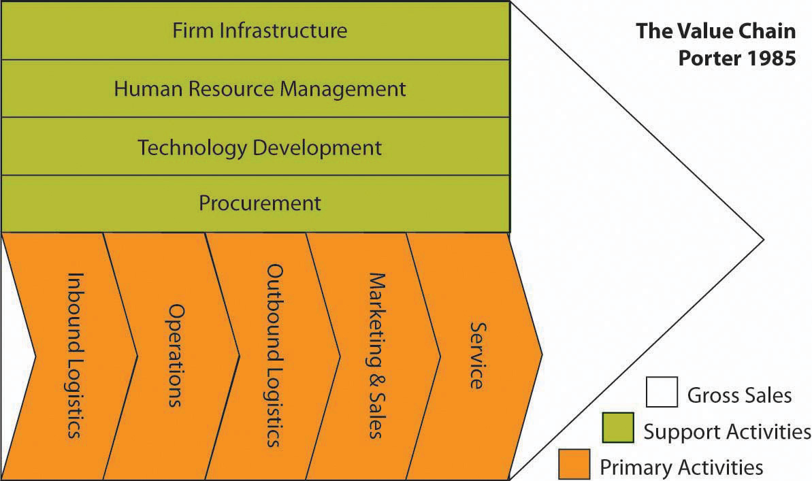
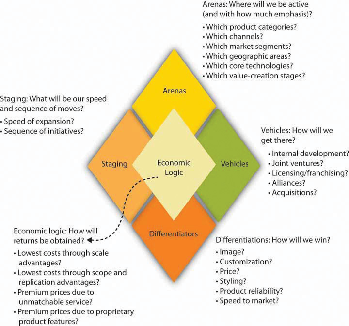

This chapter takes you deeper into the subjects of strategy and management in international business and within the context of a flattening world. As a business student, you will likely take a full course in strategic management, so you should view this chapter as simply an introduction to the field. You will learn about strategy—specifically, the strategy formulation framework known as the strategy diamond. This will help you better understand how international markets—whether for customers or factors of production—can be an integral part of a firm’s strategy. Because you know that the world is not flat, in the sense that Thomas Friedman describes, it is important that an international strategy be adjusted to adapt, overcome, or exploit differences across countries and regions. Finally, Section 10.5 "Managing the International Business with the P-O-L-C Framework" provides an introduction to managing international businesses through a brief overview of the P-O-L-C (planning-organizing-leading-controlling) framework.

Source: “Business Opportunities,” Splash Corporation, accessed June 3, 2011, http://www.splashb2b.com/business.aspx.
The tale of husband and wife Rolando and Rosalinda Hortaleza is well known in the Philippines. As the story goes, the couple launched a backyard business in 1985 to supplement their entry-level salaries as doctors at a government hospital. From this humble beginning, the Splash Group of Companies was born.
Beyond the Backyard
Like many entrepreneurs, the Hortalezas sought a big success. In 1987, they spotted an opportunity in hair spray, because “big hair” was the fad in the Philippines at that time. So the couple created a company that offered a high-quality, low-price alternative to imported hair spray.Tyrone Solee, “Hortaleza Success Story,” Millionaire Acts (blog), February 15, 2009, accessed June 3, 2010, http://www.millionaireacts.com/808/hortaleza-success-story.html. The gambit proved successful, and the Hortalezas earned their first million Philippine pesos in sales that year. Over the years, the company name changed several times, reflecting its growth and evolving strategy. What began as Hortaleza Cosmetics in 1986 became Splash Cosmetics in 1987, Splash Manufacturing Corporation in 1991, and finally Splash Corporation in 2001.“Splash Corporation, Making Waves in the Global Beauty and Personal Care Industry,” Splash Corporation, accessed November 10, 2010, http://www.splash.com.ph/NewsAndEvents.aspx?ID=8. Today, Splash Corporation sells more skin-care products than international giants like Johnson and Unilever and local brands. With sales of 90 billion pesos (nearly $2 billion), Splash Corporation is the number one maker of skin-care products in the Philippines and is sixth in the international market, being the only Filipino-owned company to hold a position among global companies and brands.Tyrone Solee, “Hortaleza Success Story,” Millionaire Acts (blog), February 15, 2009, accessed December 27, 2010, http://www.millionaireacts.com/808/hortaleza-success-story.html. In twenty years, the small business that the Hortalezas started has posted 5 billion Philippine pesos in sales, putting it among the country’s 300 largest corporations.
Splash Corporation exports and markets Splash products to almost twenty countries around the world. In Indonesia, unlike the rest of the company’s market destinations, Splash entered into a joint venture with an Indonesian company, Parit Padang. By itself, Parit Padang is one of the largest pharmaceutical and health-care distribution companies in Indonesia. The joint venture, called Splash Indonesia PT, began operating in 2000, importing Splash soap and skin-care products every month from Manila. The venture now produces some of its products locally in Indonesia, employing a staff of 40 there in its factory. Splash Indonesia PT has even developed a new product for the local market, the SkinWhite Whitening Bath Soap. This product blends innovative ingredients and technology from the Philippines with a fine Indonesian noodle soap, creating a whitening body soap of a seemingly better quality than other local soaps.
Splash recently launched the Splash Nutraceutical Corporation. The term nutraceutical was coined in the 1990s by Dr. Stephen DeFelice, founder of the US-based Foundation for Innovation in Medicine. DeFelice defined the word as any substance that is a food or part of a food and provides medical or health benefits, including the prevention and treatment of disease. In essence, nutraceuticals are “a food (or part of a food) that provides medical or health benefits, including the prevention and/or treatment of a disease.”Vicki Brower, “Nutraceuticals: Poised for a Healthy Slice of the Healthcare Market?,” Nature Biotechnology 16, no. 8 (1998): 728–731, quoted in Ekta K. Kalra, “Nutraceutical—Definition and Introduction,” AAPS PharmSci 5, no. 2 (2003), accessed November 9, 2010, http://www.aapsj.org/view.asp?art=ps050325#ref1.
The nutraceuticals market is growing rapidly worldwide, especially in such developed countries where disposable incomes are higher and the challenges of diet-disease links, aging populations, and rising health care costs are more pronounced. Nutraceuticals currently address health concerns like cardiovascular disease, osteoporosis, high blood pressure, diabetes, and gastrointestinal disorders. Worldwide sales of nutraceutical products have grown exponentially and are currently estimated at $80 billion.
The establishment of Splash Nutraceuticals completes the company’s mission of becoming a total-wellness company. Fondly called “Doc” by Splash employees (while his wife is the “Doctora”), Dr. Rolando Hortaleza considers nutraceuticals a natural extension of the company’s personal care line of products. He defines the term wellness as “beauty inside and out—if you feel good about yourself, you then become more productive.” He estimates the market potential of nutraceuticals to be in the billions of pesos.
The Values, Mission, and Vision behind Splash
Corporate Cause: We shall uplift the pride and economic well-being of the societies we serve.
Mission: Splash is a world-class company that is committed to making accessible, innovative, high-quality and value personal care products for everyone.
Vision: We are a marketing company in the beauty, personal and health care industries where we shall be known for strong brand management of pioneering, high-quality and innovative products derived from extensive research to improve the well-being of our consumers. We shall do this through:
Leading edge trade and consumer marketing systems.
Pursuit of excellence in all other business systems.
We shall be generous in sharing the rewards with our employees, business partners, stockholders and our community for the realization of our corporate cause.“Corporate Cause/Vision/Mission,” Splash Corporation, accessed November 9, 2010, http://www.splash.com.ph/our_company.aspx?id=2.
(AACSB: Ethical Reasoning, Multiculturalism, Reflective Thinking, Analytical Skills)
A strategy is the central, integrated, externally oriented concept of how a firm will achieve its objectives. Strategy formulationThe process of deciding what to do; also called strategizing. (or simply strategizing) is the process of deciding what to do; strategy implementationThe process of performing all the activities necessary to do what has been planned. is the process of performing all the activities necessary to do what has been planned. Neither can succeed without the other; the two processes are interdependent from the standpoint that implementation should provide information that is used to periodically modify the strategy. However, it’s important to distinguish between the two because, typically, different people are involved in each process. In general, the leaders of the organization formulate strategy, while everyone is responsible for strategy implementation.
Figure 10.1 Corporate and Business Strategy

Figure 10.1 "Corporate and Business Strategy" summarizes the distinction between business and corporate strategy. The general distinction is that business strategy addresses how we should compete, while corporate strategy is concerned with in which businesses we should compete. Specifically, business strategyThe ways a firm goes about achieving its objectives within a particular business. refers to the ways in which a firm plans to achieve its objectives within a particular business. In other words, one of Splash Corporation’s business strategies would address its objectives within the nutraceuticals business. This strategy may focus on such things as how it competes against multinationals, including Unilever and Procter & Gamble. Similarly, Walmart managers are engaged in business strategy when they decide how to compete with Sears for consumer dollars.
Corporate strategyAddresses three questions: (1) In what businesses should we compete? (2) How can the parent company add value to the subsidiaries? (3) How can diversifying our business or entering a new industry help us compete in our other industries? addresses issues related to three fundamental questions:
International strategyUsing corporate strategy to guide the choice of which markets, including different countries, that a firm competes in. is specialized in the sense that corporate strategy guides the choice of which markets, including different countries, a firm competes in. The different types of international strategy are reviewed in Section 10.3 "International Strategy". Even when a firm doesn’t sell products or services outside its home country, its international strategy can include importing, international outsourcing, or offshoring. ImportingThe sale of products or services in one country that are sourced in another country. involves the sale of products or services in one country that are sourced in another country. Penzeys Spices, for instance, sells herbs and spices that it buys from all over the world, yet it has retail outlets in only twenty-three states. However, such activity is not limited to small companies like Penzeys. Kohl’s Corporation, one of the largest discount retailers in the country, has stores exclusively in the United States but most of its products are sourced overseas. In outsourcingContracting with a third party to do some of a company’s work on its behalf., the company delegates an entire process (e.g., accounts payable) to the outsource vendor. The vendor takes control of the operation and runs the operation as it sees fit. The company pays the outsource vendor for the end result; how the vendor achieves those end results is up to the vendor. The outsourcer may do the work within the same country or may take it to another country (also known as offshoring). In offshoringTaking some business function out of the company’s country of orgin to be performed in another country, generally at a lower cost., the company takes a function out of its home country and places the function in another country, generally at a lower cost. International outsourcingOutsourcing to to a nondomestic third party. refers to work that is contracted to a nondomestic third party.
From where does strategy originate? Strategy formulation typically comes from the top managers or owners of an organization, while the responsibility for strategy implementation resides with all organizational members. This entire set of activities is called the strategizing process, as summarized in Figure 10.2.
As you can see with the opening case on Splash Corporation, the strategizing process starts with an organization’s mission and vision. A mission statementAn organization’s statement of purpose that describes who the company is and what it does is the organization’s statement of purpose and describes who the company is and what it does. Customers, employees, and investors are the stakeholders most often emphasized, but others like government or communities (i.e., in the form of social or environmental impact) can also be impacted.Mason Carpenter, Talya Bauer, and Berrin Erdogan, Principles of Management (Nyack, NY: Unnamed Publisher, 2009), accessed January 5, 2011, http://www.gone.2012books.lardbucket.org/printed-book/127834. Mission statements are often longer than vision statements. Sometimes mission statements include a summation of the firm’s values. Organizational valuesThe shared principles, standards, and goals that are included in the mission statement or as a separate statement. are those shared principles, standards, and goals.
Figure 10.2

Source: M. Carpenter, 2010
A vision statementA future-oriented declaration of an organization’s purpose and aspirations., in contrast, is a future-oriented declaration of the organization’s purpose. In many ways, the mission statement lays out the organization’s “purpose for being,” and the vision statement then says, “on the basis of that purpose, this is what we want to become.” The strategy should flow directly from the vision, since the strategy is intended to achieve the vision and satisfy the organization’s mission. Along with some form of internal and organizational analysis using SWOTA strategic management tool that helps an organization take stock of its internal characteristics (strengths and weaknesses) to formulate an action plan that builds on what it does well while overcoming or working around weaknesses and also assess external environmental conditions (opportunities and threats) that favor or threaten the organization’s strategy. (or the firm’s strengths, weaknesses, opportunities, and threats), a strategy is formulated into a strategic plan. This plan should allow for the achievement of the mission and vision. Taking SWOT analysis into consideration, the firm’s management then determines how the strategy will be implemented in regard to organization, leadership, and controls. Strategic planning, together with organizing, leading, and controlling, is sometimes referred to by the acronym P-O-L-CAcronym for planning, organizing, leading, and controlling; the framework used to understand and communicate the relationship between strategy formulation and strategy implementation.. This is the framework managers use to understand and communicate the relationship between strategy formulation and strategy implementation.
Research suggests that companies from different countries approach strategy from different perspectives of social responsibility. Central to the distinctiveness of the Indian business model is the sense of mission, a social goal for the business that goes beyond making money and helps employees see a purpose in their work. Every company we [the researchers] saw articulated a clear social mission for their business. ITC, a leading conglomerate, echoed the views of the companies we interviewed with this statement, describing the company’s purpose: “Envisioning a larger societal purpose has always been a hallmark of ITC. The company sees no conflict between the twin goals of shareholder value enhancement and societal value creation.” Contrast this Indian model, where a company’s business goal is seen as bettering society, with the US model, where we try to motivate employees around the corporate goal of making shareholders rich. The US approach is at a sizable disadvantage, because it is difficult for most people to see making money for shareholders as a goal that is personally meaningful. While it is possible to tie pay to shareholder value, it is extremely expensive to pay the average employee enough in share-based incentives to get him or her to focus on shareholder value.Peter Cappelli, Harbir Singh, Jitendra Singh, and Michael Useem, “The India Way: Lessons for the U.S.,” Academy of Management Perspectives 24, no. 2 (2010): 6–24.
SWOT analysis was developed by Ken Andrews in the early 1970s.Kenneth R. Andrews, The Concept of Corporate Strategy (Homewood, IL: Richard D. Irwin, 1971). It is the assessment of a company’s strengths and weaknesses—the S and W—which occur as part of organizational analysis; this organizational analysis of S and W is an audit of a company’s internal workings. Conversely, examining the opportunities and threats is a part of environmental analysis—the company must look outside the organization to determine the opportunities and threats, over which it has less control. When conducting a SWOT analysis, a firm asks four basic questions about itself and its environment:
A good starting point for strategizing is an assessment of what an organization does well and what it does less well.Mason Carpenter, Talya Bauer, and Berrin Erdogan, Principles of Management (Nyack, NY: Unnamed Publisher, 2009), accessed January 5, 2011, http://www.gone.2012books.lardbucket.org/printed-book/127834. The general idea is that good strategies take advantage of strengths and minimize the disadvantages posed by any weaknesses. Michael Jordan, for instance, is an excellent all-around athlete; he excels in baseball and golf, but his athletic skills show best in basketball. As with Jordan’s athleticism, when you can identify certain strengths that set an organization apart from actual and potential competitors, that strength is considered a source of competitive advantage. The hardest but most important thing for an organization to do is to develop its competitive advantage into a sustainable competitive advantageA situation where an organization’s strengths cannot be easily duplicated or imitated by other firms, nor made redundant or less valuable by changes in the external environment.—that is, using the organization’s strengths in way a that can’t be easily duplicated by other firms or made less valuable by changes in the external environment.
After considering what you just learned about competitive advantage and sustainable competitive advantage, it’s easy to see why the external environment is a critical input into strategy. Opportunities assess the external attractive factors that represent the reason for a business to exist and prosper. What opportunities exist in the market or the environment from which the organization can benefit? Threats include factors beyond your control that could place the strategy or even the business itself at risk. Threats are also external—managers typically have no control over them, but it can be beneficial to have contingency plans in place to address them.
In summary, SWOT analysis helps you identify strategic alternatives that address the following questions:
(AACSB: Reflective Thinking, Analytical Skills)
Business-level strategies are intended to create differences between a firm’s position and those of its rivals. To position itself against its rivals, a firm must decide whether to perform activities differently or perform different activities.Michael E. Porter, “What Is Strategy?,” Harvard Business Review 74, no. 6 (November–December 1996): 61–78. A firm’s business-level strategy is a deliberate choice in regard to how it will perform the value chain’s primary and support activities in ways that create unique value.
Collectively, these primary and support activities make up a firm’s value chainThe sequence of activities that a firm undertakes to create value, such as marketing, sales, and service., as summarized in Figure 10.3 "The Value Chain". For example, successful Internet shoe purveyor Zappos has key value-chain activities of purchasing, logistics, inventory, and customer service. Successful use of a chosen strategy results only when the firm integrates its primary and support activities to provide the unique value it intends to deliver. The Zappos strategy is to emphasize customer service, so it invests more in the people and systems related to customer service than do its competitors.
Value is delivered to customers when the firm is able to use competitive advantages resulting from the integration of activities. Superior fit of an organization’s functional activities, such as production, marketing, accounting, and so on, forms an activity system—with Zappos, it exhibits superior fit among the value-chain activities of purchasing, logistics, and customer service. In turn, an effective activity system helps the firm establish and exploit its strategic position. As a result of Zappos’s activity system, the company is the leading Internet shoe retailer in North America and has been acquired by Amazon to further build Amazon’s clothing and accessories business position.
Figure 10.3 The Value Chain
Source: Adapted from Michael Porter, Competitive Advantage (New York: Free Press, 1985). Exhibit is Creative Commons licensed at http://en.wikipedia.org/wiki/Image:ValueChain.PNG.
Favorable positioning is important to develop and sustain competitive advantages.Edward H. Bowman and Constance E. Helfat, “Does Corporate Strategy Matter?,” Strategic Management Journal 22, no. 1 (January 2001): 1–4; Bill McEvily and Akbar Zaheer, “Bridging Ties: A Source of Firm Heterogeneity in Competitive Capabilities,” Strategic Management Journal 20, no. 12 (December 1999): 1133–56. Improperly positioned firms encounter competitive difficulties and can fail to sustain competitive advantages. For example, Sears made ineffective responses to competitors such as Walmart, leaving it in a weak competitive position for years. These ineffective responses resulted from the company’s inability to implement appropriate strategies to take advantage of external opportunities and internal competencies and to respond to external threats. Two researchers have described this situation: “Once a towering force in retailing, Sears spent 10 sad years vacillating between an emphasis on hard goods and soft goods, venturing in and out of ill-chosen businesses, failing to differentiate itself in any of them, and never building a compelling economic logic.”Donald C. Hambrick and James W. Fredrickson, “Are You Sure You Have a Strategy?,” Academy of Management Executive 19, no. 4 (2005): 52. Firms choose from among three generic business-level strategies to establish and defend their desired strategic position against rivals: (1) cost leadership, (2) differentiation, and (3) integrated cost leadership and differentiation. Each business-level strategy helps the firm establish and exploit a competitive advantage within a particular scope.
When deciding on a strategy to pursue, firms have a choice of two potential types of competitive advantage: (1) lower cost than competitors or (2) better quality (through a differentiated product or service) for which the form can charge a premium price. Competitive advantage is therefore achieved within some scope. ScopeThe range of value-chain activities in which a firm is engaged, including the group of product and customer segments served and the array of geographic markets in which the firm competes. includes the geographic markets the company serves as well as the product and customer segments in which it competes. Companies seek to gain competitive advantage by implementing a cost leadership strategy or a differential strategy.
As you read about each of these business-level strategies, it’s important to remember that none is better than the others. Rather, how effective each strategy depends on each firm’s specific circumstances—namely, the conditions of the firm’s external environment as well as the firm’s internal strengths, capabilities, resources, and core competencies.
Choosing to pursue a cost-leadership strategyFirms that pursue a cost-leadership strategy seek to make their products or services at the lowest cost possible relative to their competitors while maintaining a quality that is acceptable to consumers. Firms achieve cost leadership through a multipronged set of tactics, such as building large-scale operations that help them reduce the cost of each unit, eliminating extra features in their products or services, reducing their marketing costs, and finding low-cost sources or materials or labor. means that the firm seeks to make its products or provide its services at the lowest cost possible relative to its competitors while maintaining a quality that is acceptable to consumers. Firms achieve cost leadership by building large-scale operations that help them reduce the cost of each unit by eliminating extra features in their products or services, by reducing their marketing costs, by finding low-cost sources or materials or labor, and so forth. Walmart is one of the most cited examples of a global firm pursuing an effective cost-leadership strategy.
One of the primary sets of activities that firms perform is the set of activities around supply-chain management and logistics. Supply-chain management encompasses both inbound and outbound logistics. Inbound logistics include identifying, purchasing, and handling all the raw materials or inputs that go into making a company’s products. For example, one of Stonyfield Farm’s inputs is organic milk that goes into its organic yogurts. Walmart buys finished products as its inputs, but it must warehouse these inputs and allocate them to its specific retail stores. In outbound logistics, companies transport products to their customer. When pursuing a low-cost strategy, companies can examine logistics activities—sourcing, procurement, materials handling, warehousing, inventory control, transportation—for ways to reduce costs. These activities are particularly fruitful for lowering costs because they often account for a large portion of the firm’s expenditures. For example, Marks & Spencer, a British retailer, overhauled its supply chain and stopped its previous practice of buying supplies in one hemisphere and shipping them to another. This will save the company over $250 million dollars over five years—and will greatly reduce carbon emissions.Michael E. Porter and Mark R. Kramer, “The Big Idea: Creating Shared Value,” Harvard Business Review, January 2011, accessed January 14, 2011, http://hbr.org/2011/01/the-big-idea-creating-shared-value/ar/pr.
DifferentiationAn integrated set of actions designed by a firm to produce or deliver goods or services (at an acceptable cost) that customers perceive as being different in ways that are important to them. stems from creating unique value to the customer through advanced technology, high-quality ingredients or components, product features, superior delivery time, and the like.Michael E. Porter, Competitive Advantage (New York: Free Press, 1985), 150. Companies can differentiate their products by emphasizing products’ unique features, by coming out with frequent and useful innovations or product upgrades, and by providing impeccable customer service. For example, the construction equipment manufacturer Caterpillar has excelled for years on the durability of its tractors; its worldwide parts availability, which results in quick repairs; and its dealer network.
When pursuing the differentiation strategy, firms examine all activities to identify ways to create higher value for the customer, such as by making the product easier to use, by offering training on the product, or by bundling the product with a service. For example, the Henry Ford West Bloomfield Hospital in West Bloomfield, Michigan, has distinguished itself from other hospitals by being more like a hotel than a hospital. The hospital has only private rooms, all overlooking a pond and landscaped gardens. The hospital is situated on 160 acres of woodlands and wetlands and has twenty-four-hour room service, Wi-Fi, and a café offering healthful foods. “From the get-go, I said that the food in the hospital would be the finest in the country,” says Gerard van Grinsven, president and CEO of the hospital.Gerard van Grinsven, “Healthy Living, the Ritz Way” (booklet, BIF-6 Collaborative Innovation Summit, Providence, RI, September 15–16, 2010), 60–61. The setting and food are so exquisite that not only has the café become a destination café, but some couples have even held their weddings there.Gerard van Grinsven, “Healthy Living, the Ritz Way” (presentation, BIF-6 Collaborative Innovation Summit, Providence, RI, September 15–16, 2010).
An integrated cost-leadership and differentiation strategyA strategy to produce relatively differentiated products or services at relatively low costs. is a combination of the cost leadership and the differentiation strategies. Firms that can achieve this combination often perform better than companies that pursue either strategy separately.Gregory G. Dess, Anil Gupta, Jean-François Hennart, and Charles W. L. Hill, “Conducting and Integrating Strategy Research at the International, Corporate, and Business Levels: Issues and Directions,” Journal of Management 21, no. 3 (Fall 1995): 377. To succeed with this strategy, firms invest in the activities that create the unique value but look for ways to reduce cost in nonvalue activities.
Remember, business strategy is related to questions about how a firm competes; corporate strategy is related to questions about what businesses to compete in and how these choices work together as a system. Nonprofits and governments have similar decision-making situations, although the element of competition isn’t always present. A firm that is making choices about the scope of its operations has several options. Figure 10.4 summarizes how all organizations can expand (or contract) along any of three areas: (1) vertical, (2) horizontal, and (3) geographic.
Vertical scopeAll the activities, from the gathering of raw materials to the sale of the finished product, that a business goes through to make a product. refers to all the activities, from the gathering of raw materials to the sale of the finished product, that a business goes through to make a product. Sometimes a firm expands vertically out of economic necessity. Perhaps it must protect its supply of a critical input, or perhaps firms in the industry that supply certain inputs are reluctant to invest sufficiently to satisfy the unique or heavy needs of a single buyer. Beyond such reasons as these—which are defensive—firms expand vertically to take advantage of growth or profit opportunities. Vertical expansion in scope is often a logical growth option because a company is familiar with the arena.
Sometimes a firm can create value by moving into suppliers’ or buyers’ value chains. In some cases, a firm can bundle complementary products. If, for instance, you were to buy a new home, you’d go through a series of steps in making your purchase decision. Now, most homebuilders concentrate on a fairly narrow aspect of the homebuilding value chain. Some, however, have found it profitable to expand vertically into the home-financing business by offering mortgage brokerage services. Pulte Homes Inc., one of the largest homebuilders in the United States, set up a wholly owned subsidiary, Pulte Mortgage LLC, to help buyers get financing for new homes. This service simplifies the home-buying process for many of Pulte’s customers and allows Pulte to reap profits in the home-financing industry. Automakers and car dealers have expanded into financing for similar reasons.
Figure 10.4

Source: M. Carpenter, 2010
Whereas as vertical scope reflects a firm’s level of investment in upstream or downstream activities, horizontal scopeThe number of similar businesses or business activities at the same level of the value chain. refers to the number of similar businesses or business activities at the same level of the value chain. A firm increases its horizontal scope in one of two ways:
Examples of horizontal scope include when an oil company adds refineries; an automaker starts a new line of vehicles; or a media company owns radio and television stations, newspapers, books, and magazines. The degree to which horizontal expansion is desirable depends on the degree to which the new industry is related to a firm’s home industry. Industries can be related in a number of different ways. They may, for example, rely on similar types of human capital, engage in similar value-chain activities, or share customers with similar needs. Obviously, the more factors present, the greater the degree of relatedness. When, for instance, Coca-Cola and PepsiCo expanded into the bottled water business, they were able to take advantage of the skill sets that they’d already developed in bottling and distribution. Moreover, because bottled water and soft drinks are substitutes for one another, both appeal to customers with similar demands.
On the other hand, when PepsiCo expanded into snack foods, it was clearly moving into a business with a lesser degree of relatedness. For one thing, although the distribution channels for both businesses are similar (both sell products through grocery stores, convenience stores, delis, and so forth), the technology for producing the products is fundamentally different. In addition, although the two industries sell complementary products—they’re often sold at the same time to the same customers—they aren’t substitutes.
Why is increased horizontal scope attractive? Primarily because it offers opportunities in four areas:
Economies of scaleThe cost advantages that a business obtains due to expansion; primarily refer to efficiencies associated with supply-side changes, such as increasing or decreasing the scale of production, of a single product type., in microeconomics, are the cost advantages that a business obtains through expanding in size, which is one reason why companies grow large in certain industries. Economies of scale are also used to justify free-trade policies, because some economies of scale may require a larger market than is possible within a particular country. For example, it wouldn’t be efficient for a small country like Switzerland to have its own automaker, if that automaker could only sell to its local market. That automaker may be profitable, however, if it exports cars to international markets in addition to selling to selling them in the domestic market.
Economies of scopeThe cost advantages that a business obtains due to expansion; primarily refer to efficiencies associated with demand-side changes, such as increasing or decreasing the scope of marketing and distribution, of different types of products. are similar in concept to economies of scale. Whereas economies of scale derive primarily from efficiencies gained from marketing or the supply side, such as increasing the scale of production of a single product type, economies of scope refer to efficiencies gained from demand-side changes, such as increasing the scope of marketing and distribution. Economies of scope gained from marketing and distribution are one reason why some companies market products as a bundle or under a brand family. Because segments in closely related industries often use similar assets and resources, a firm can frequently achieve cost savings by sharing them among businesses in different segments. The fast-food industry, for instance, has many segments—burgers, fried chicken, tacos, pizza, and so forth. Yum! Brands, which operates KFC, Pizza Hut, Taco Bell, A&W Restaurants, and Long John Silver’s, has embarked on what the company calls a “multibrand” store strategy. Rather than house all of its fast food in separate outlets, Yum! achieves economies of scope across its portfolio by bundling two outlets in a single facility. The strategy works in part because customer purchase decisions in horizontally related industries are often made simultaneously. In other words, two people walking into a bundled fast-food outlet may desire different things to eat, but both want fast food, and both are going to eat at the same time. In addition, the inherent product and demand differences across breakfast, lunch, dinner, and snacks allows for multiple food franchises to share a resource that would otherwise be largely unused during off-peak hours.
A firm increases geographic scopeThe number of different geographic markets in which an organization participates. by moving into new geographic areas without entirely altering its business model. In its early growth period, for instance, a company may simply move into new locations in the same country. For example, the US fast-food chain Sonic will only open new outlets in states that are adjacent to states where it already has stores.
More often, however, increased geographic scope has come to mean internationalization—entering new markets in other parts of the world. For this reason, international strategy is discussed in depth in the next section. For a domestic firm whose operations are confined to its home country, the whole globe is a potential area of expansion. Remember, however, that just as different industries can exhibit different degrees of relatedness, so, too, can different geographic markets—even those within the same industry. We can assess relatedness among different national markets by examining a number of factors, including laws, customs, cultures, consumer preferences, distances from home markets, common borders, language, socioeconomic development, and many others.
Geographic expansion can be motivated by economies of scale or economies of scope. Research and development (R&D), for example, represents a significant, relatively fixed cost for firms in many industries. When firms move into new regions of a country or global arenas, they often find that they can amortize their R&D costs over a larger market. For instance, the marginal cost for a pharmaceutical firm to enter a new geographic market is lower than the marginal costs of R&D and running clinical trials, which are required when a company wants to bring a new drug into the US market. Once the costs of development and entry are covered, entering new geographic markets brings in new revenues. Because the fixed costs have been amortized over the new, larger market, the average cost for all the firm’s customers goes down. It should come as no surprise, then, that industries with relatively high R&D expenditures, such as pharmaceuticals and computer-related products, are among the most thoroughly globalized industries. Finally, changes in geographic scope can lower costs when operations are moved to lower cost supply markets.
(AACSB: Reflective Thinking, Analytical Skills)
At the corporate level, firms choose to use one of three international strategies: multidomestic, global, or transnational (transnational is a combination of multidomestic and global). These three strategies reflect trade-offs between local responsiveness and global efficiency For firms to gain a competitive advantage, they have to devise strategies that take best advantage of the firm’s core compentencies and that are difficult for competitors to copy.
Multidomestic strategyA multidomestic strategy maximizes local responsiveness by giving decentralizing decision-making authority to local business units in each country so that they can create products and services optimized to their local markets. maximizes local responsiveness by giving decentralizing decision-making authority to local business units in each country so that they can create products and services optimized to their local markets. A multidomestic strategy would be appropriate, for instance, where Thomas Friedman’s flat-world thesis is not applicable. A multidomestic strategy focuses on competition within each country and maximizes local responsiveness. It assumes that the markets differ and, therefore, are segmented by country boundaries. In other words, consumer needs and desires, industry conditions (e.g., the number and type of competitors), political and legal structures, and social norms vary by country. Using a multidomestic strategy, the firm can customize its products to meet the specific preferences and needs of local customers. As a result, the firm can compete more effectively in each local market and increase its local market share.
The disadvantage of a multidomestic strategy, however, is that the firm faces more uncertainty because of the tailored strategies in different countries. In addition, because the firm is pursuing different strategies in different locations, it cannot take advantage of economies of scale that could help decrease costs for the firm overall. The multidomestic strategy has been more commonly used by European multinational firms because of the variety of cultures and markets found in Europe.
As mentioned earlier, Yum! Brands has a strong incentive to compete internationally with its restaurant concepts (i.e., KFC, Pizza Hut, Taco Bell, A&W Restaurants, and Long John Silver’s). Yum! pursues a multidomestic strategy by trying to localize as much as possible. The firm doesn’t open restaurants using only the US model. Wherever the company has locations, it consistently adapts to local tastes and negotiates well when cultural and political climates change: “In Japan, for instance, KFC sells tempura crispy strips. In northern England, KFC stresses gravy and potatoes, while in Thailand, it offers fresh rice with soy or sweet chili sauce. In Holland, the company makes a potato-and-onion croquette. In France, it sells pastries alongside chicken. And in China, the chicken gets spicier the farther inland you travel. More and more, if it’s only an American brand without a regional appeal, it’s going to be difficult to market.”Brian O’Keefe, “What Do KFC and Pizza Hut Conjure Up Abroad?,” Fortune, November 26, 2001, 102–10. Recognizing this constraint, Yum! introduces its products in those foreign markets that are the shortest “taste” distance from its traditional home markets.Pankaj Ghemawat, “Distance Still Matters,” Harvard Business Review 79, no. 8 (2001): 147. So, it sticks to high-population areas in which American culture has some appeal as well.
In contrast to a multidomestic strategy, a global strategyA global strategy is an international strategy in which the home office centralizes and controls decision-making authority and seeks to maximize global efficiency. is centralized and controlled by the home office and seeks to maximize global efficiency Under this strategy, products are much more likely to be standardized rather than tailored to local markets. One way to think about global strategies is that if the world is flat, you can sell the same products and services in the same way in every country on the planet. The strategic business units operating in each country are assumed to be interdependent, and the home office attempts to achieve integration across these businesses. Therefore, a global strategy emphasizes economies of scale and offers greater opportunities to utilize innovations developed at the corporate level or in one country in other markets.
Although pursuing a global strategy decreases risk for the firm, the firm may not be able to gain as high a market share in local markets because the global strategy isn’t as responsive to local markets. Another disadvantage of the global strategy is that it is difficult to manage because of the need to coordinate strategies and operating decisions across country borders. Consequently, achieving efficient operations with a global strategy requires the sharing of resources as well as coordination and cooperation across country boundaries, which in turn require centralization and headquartered control. Whether the world is flat or flattening can often depend on the industry. In most cases, the world isn’t flat, but in a few industries the market characteristics are fairly common. The cement and concrete industry is an example of an industry where the flatteners have taken effect. CEMEX, a Mexico-based cement and building materials company founded in 1906, pursued an international business strategy that led to its growth and position as one of the top building materials companies in the world today.“Strategically Positioned,” CEMEX, accessed January 1, 2011, http://www.cemex.com/tc/tc_gl.asp. CEMEX acquired companies to grow rapidly, took advantage of economies of scale, and used the Internet to lower its cost structure. Perhaps most crucial to its international expansion success was foreseeing the shifts in distribution technologies that would bring previously disparate regional markets closer together.Daniel F. Spulber, Global Competitive Strategy (Cambridge, UK: Cambridge University Press, 2007), 217–18.
In 2009, CEMEX CEO Lorenzo H. Zambrano wrote a message to stakeholders regarding sustainable development:
In 2009, as we coped with the worst crisis to hit the global economy, our industry, and our company in 75 years, we took important and decisive steps to strengthen not only our business model, but also our commitment to sustainable development. As a result, we are a stronger company, well positioned to take advantage of the recovery of the global economy. That is testimony to the quality of our employees, to our company’s core values of collaboration, integrity, and leadership, and to the disciplined execution of sound strategies.
We made several difficult decisions during the year to adjust to a rapidly evolving and extraordinarily challenging market environment. For example, we sold assets, most notably our Australian operations, and reorganized our business to improve efficiency and productivity. Together, these measures brought about an unfortunate, but necessary, reduction in our workforce. However, these steps enabled us to weather the crisis and will position our company for long-term success.
Even as the economic crisis unfolded, we deepened our commitment to our stakeholders. We continued our efforts to ensure the safety of our employees, and many of our country operations recorded solid improvements in their safety performance. However, despite our ongoing efforts, I am deeply saddened to report that 33 people—including employees, contractors, and third parties—died in incidents related to our operations during 2009. This is tragic and unacceptable. We are working harder than ever to identify and address the root causes of all fatalities and serious injuries in order to prevent their recurrence. For example, we are expanding and strengthening our efforts in key areas such as safety training for drivers and contractors. Above all, we remain committed to our global long-term goal of zero incidents.
On the environmental front, we continued to reduce our carbon footprint by improving the energy efficiency of our operations and expanding our use of alternative fuels. As a result, in 2009 we increased our use of alternative fuels to 16.4 percent, exceeding our target for 2015 ahead of time. In addition, Eurus, the wind farm project developed by ACCIONA Energía, became fully operational during the year and can supply 25 percent of our plants’ electricity needs in Mexico.
Finally, we engaged the communities in which we operate through open and ongoing dialogue, social initiatives, and volunteer efforts. We continued to find ways to promote access to housing and community infrastructure. For example, we launched our most successful low-income housing solution, Patrimonio Hoy, in the Dominican Republic.
As a global company, we are deeply aware of our responsibility to address complex sustainability challenges. We are committed to further reducing our impact on the environment and recognize that we have many opportunities to improve. We reconfirm our commitment to address climate change and to the development of a low-carbon economy.
We actively engage with our global panel of sustainability experts, who provide important and valuable advice. On a personal note, I thank them for their feedback and for continuously challenging us to make further progress.
We present our 2009 sustainable development report within the framework of our overall sustainability website to better communicate our sustainability performance. We have provided an executive summary that highlights our performance on our key sustainability issues. We hope that you find the report engaging, transparent, and comprehensive, and we welcome your feedback.
Sincerely, Lorenzo H. Zambrano
CEMEX Chairman of the Board and Chief Executive OfficerLorenzo H. Zambrano, “Addressing Complex Sustainability Challenges,” CEMEX, accessed June 7, 2010, http://www.cemex.com/su/Su_oc_me.aspx.
Transnational strategyTransnational strategy is an international strategy that combines firm-wide operating efficiencies and core competencies with local responsiveness tailored to different country circumstances and needs. seeks to combine the best of multidomestic strategy and a global strategy to get both global efficiency and local responsiveness. For many industries, given the differences across markets and the similarties being fostered by the flatteners, this form of strategy is highly desirable and appropriate. The difficulty is that combining the multidomestic and global strategies is hard to do because it requires fulfililng the dual goals of flexibility and coordination. Firms must balance opposing local and global goals. On the positive side, firms that effectively implement a transnational strategy often outperform competitors who use either the multidomestic or global corporate-level strategies.John Child and Yanni Yan, “National and Transnational Effects in International Business: Indications from Sino-Foreign Joint Ventures,” Management International Review 41, no. 1 (January 2001): 53–75.
The Ford Motor Company and BMW are examples of firms pursuing a transnational strategy. Ford, for example, is focusing on the “world car,” building one core car that will be sold globally. This strategy lowers Ford’s development costs, because rather than developing different cars for different countries or regions, Ford will sell the same car to all markets. The world car strategy, however, poses a major hurdle: how to design a car that appeals to consumers in many different countries. To tackle the issue, Ford took a page from BMW, which uses the concept of “fashion forward” when designing its 3 Series cars for multiple markets. The secret, according to Verena Kloos, president of BMW’s DesignworksUSA studio in California, is to “show consumers what the next big thing is, not reflect what they think now.” As James D. Farley, Ford’s global marketing chief, sees it, the global appeal of the 3 Series rests on trust and aspiration. People worldwide see the same design, which builds trust through ubiquity and familiarity and leads them to aspire to own the car themselves.David Kiley, “Can Ford’s ‘World Car’ Bet Pay Off?,” BusinessWeek, accessed June 7, 2010, http://www.businessweek.com/magazine/content/09_24/b4135058974279.htm?campaign_id=rss_innovate.
Sometimes, firms expanding into new geographic markets find that they must adapt certain components of their strategies to accommodate local environments. In the United States, for instance, Dell is famous for the business model that allows it to skip middlemen and go directly to suppliers and customers. In its early years, Dell experimented with a brick-and-mortar retail strategy but quickly retrenched. As it expanded into international markets, however, Dell has found that it has to suspend its direct model, at least temporarily. Why? Basically because it needs local intermediaries to help develop both a base of business and acceptable levels of customer awareness and sophistication. Such has been the case first in India and then in China, which constitute huge markets for Dell.
Figure 10.5 Dell’s Local Operations in Xiamen, China

Courtesy of Dell, Inc.
While Dell provides a good example of adaptation, most global firms tend to approach corporate strategy from the perspective of their domestic market constraint, which can be problematic. Microsoft is a case in point. The United States and the European Union (EU) have very different traditions and models of competition, which in turn means that strategies must vary across these important markets. Had you not been aware of these differences, you might think that Microsoft followed an ideal resource-based corporate strategy in its diversification into Europe. It bundled its Windows operating system with the Internet Explorer browser and other software to increase the company’s perceived value and, therefore, customers’ willingness to pay. It also used its extensive experience with home-computer software, operating systems, and applications to better penetrate the server market for software and operating systems, where customers are primarily businesses. Finally, Microsoft tried to lock out competitors by including its Windows Media Player as a standard feature in both its server and home PC operating systems.
The EU, however, has made these Microsoft tactics illegal: the bundling strategy “deters innovation and reduces consumer choice in any technologies which Microsoft could conceivably take an interest in and tie with Windows in the future.”“EU Lowers Boom on Microsoft,” Wired, March 24, 2004, accessed November 10, 2010, http://www.wired.com/techbiz/media/news/2004/03/62789. The EU signaled its disapproval by imposing a fine of over $600 million and giving Microsoft ninety days to release versions of its Windows operating systems for home PCs and servers without the Windows Media Player and to begin providing rivals access to the details of the code underlying its proprietary server systems, used primarily in business settings. This is not the first time such differences in regulatory environments have been ignored or underestimated by global firms. Just a few years earlier, the European Commission’s ruling dealt a fatal blow to the all-but-done merger between Honeywell and General Electric (GE), citing that the merger would reduce competition in the aerospace industry.Yusaf Akbar, “Grabbing Victory from the Jaws of Defeat: Can the GE-Honeywell Merger Force International Competition Policy Cooperation?,” World Competition 25, no. 4 (2002): 26–31.
(AACSB: Reflective Thinking, Analytical Skills)
Good strategy formulation means refining the elements of the strategy. First of all, don’t confuse part of a strategy for a strategy itself. Being a low-cost provider or first mover in a market may be part of a strategy or the underlying logic of a particular strategy, but it’s not a complete strategy. It’s also important not to confuse your mission or vision with a strategy, even though the former are essential to the development and execution of good strategies.
As noted earlier, a strategy is an integrated and externally oriented concept of how a firm will achieve its objectives—how it will compete against its rivals. A strategy consists of an integrated set of choices. These choices relate to five elements managers must consider when making decisions: (1) arenas, (2) differentiators, (3) vehicles, (4) staging and pacing, and (5) economic logic. This group of elements, which are central to the strategic management process outlined in Figure 10.6 "The Strategy Diamond", makes up the strategy diamondThe constellation of business, corporate, and international strategy elements in terms of arenas, differentiators, vehicles, staging and pacing, and economic logic.. Most strategic plans focus on one or two such elements, often leaving large gaps in the overall strategy. Only when you have answers to questions about each of these five elements can you determine whether your strategy is an integrated whole; you’ll also have a better idea of the areas in which your strategy needs to be revised or overhauled. As the strategy diamond figure shows, a good strategy considers the five key elements in order to arrive at specific answers to five questions:
Let’s take a closer look at each of these elements.
Figure 10.6 The Strategy Diamond
Source: Adapted from Donald C. Hambrick and James W. Fredrickson, “Are You Sure You Have a Strategy?,” Academy of Management Executive 19, no. 4 (2005): 51–62.
ArenasThe facet of the strategy diamond that identifies the areas in which a firm will be active, such as industry segments, geographic markets, and channels segments. are areas in which a firm will be active. Decisions about a firm’s arenas may encompass its products, services, distribution channels, market segments, geographic areas, technologies, and even stages of the value-creation process. Unlike vision statements, which tend to be fairly general, the identification of arenas must be very specific. It clearly tells managers what the firm should and should not do. In addition, because firms can contract with outside parties for everything from employees to manufacturing services, the choice of arenas can be fairly narrowly defined for some firms.
For example, as the largest US bicycle distributor, Pacific Cycle owns the Schwinn, Mongoose, and GT brands and sells its bikes through big-box retail outlets and independent dealers, as well as through independent agents in foreign markets. In addition to these arena choices, Pacific Cycle has entirely outsourced the production of its products to Asian manufacturers. This is important in the sense that the strategy diamond also helps the firm be precise in regard to which activities it will engage itself and which ones it will outsource and where. As you know, Asia happens to be a low-cost source of high-quality manufactured goods. In outsourcing shoes and apparel lines, Nike follows a similar strategy in terms of arenas. One key difference, however, is that Nike, through its Nike Town retail outlets, has also chosen a direct retail presence in addition to its use of traditional retail-distribution channels.
The arenas facet of the strategy diamond helps you answer questions about business strategy—that is, it helps you determine which particular industry or geographic segments are the firm’s prime competitive arenas. The arenas facet also allows you to summarize corporate strategy—that is, it allows you to summarize which group of industry and geographic segments the firm competes in.
DifferentiatorsThe facet of the strategy diamond that comprises features and attributes of a company’s product or service that help it beat its competitors in the marketplace. are features and attributes of a company’s product or service that help it beat its competitors in the marketplace. Firms can be successful in the marketplace along a number of common dimensions, including image, customization, technical superiority, price, quality, and reliability. Japanese automakers Toyota and Honda have done very well by providing effective combinations of differentiators. They sell both inexpensive cars and high-end cars with high-quality features, and many consumers find the value that they provide hard to match. However, even though the best strategies often combine differentiators, history has shown that firms often perform poorly when they try to be all things to all consumers. It’s difficult to imagine, for instance, a single product that boasts both state-of-the-art technology and the lowest price on the market. Part of the problem is perceptual—consumers often associate low quality with low prices. Part of it is practical—leading-edge technologies cost money to develop and command higher prices because of their uniqueness or quality.
There are two critical factors in selecting differentiators:
Audi is an example of a company that has aligned these two factors successfully. Several years ago, Audi management realized that its cars were perceived as low-quality but high-priced German automobiles—obviously a poor competitive position. The firm decided that it had to move one way or another—up market or down market. It had to do one of two things: (1) lower its costs so that its pricing was consistent with customers’ perceptions of product quality or (2) improve quality sufficiently to justify premium pricing. Given limited resources, the firm couldn’t go in both directions; that is, it couldn’t produce cars in both the low-price and high-quality strata. Audi made a decision to invest heavily in quality programs and in refining its marketing efforts. Ten years later, the quality of Audi cars has increased significantly, and customer perception has moved them much closer to the level of BMW and Mercedes-Benz. Audi has reaped the benefits of premium pricing and improved profitability, but the decisions behind the strategic up-market move entailed significant trade-offs.
Differentiators are what drive potential customers to choose one firm’s offerings over those of competitors. The earlier and more consistent the firm is at driving these differentiators, the greater the likelihood that customers will recognize them.
VehiclesThe facet of the strategy diamond that relates to the means for participating in targeted arenas, such as alliances, organic growth, or acquisition. are the means for participating in targeted arenas. For instance, a firm that wants to go international can do so in different ways. In a recent drive to enter certain international markets (e.g., Argentina), Walmart has opened new stores and grown organically—meaning that it developed all the stores internally as opposed to acquiring stores already based in the countries it wanted to enter. Elsewhere (namely, in England and Germany), Walmart has purchased existing retailers and is in the process of transferring its unique way of doing business to the acquired companies. Likewise, a firm that requires a new technology could develop it through investments in research and development (R&D). Or it could opt to form an alliance with a competitor or a supplier that already possesses the technology, accelerating the integration of the missing piece into its set of resources and capabilities. Finally, it could simply buy another firm that owns the technology. In this case, the possible vehicles for entering a new arena include acquisitions, alliances, and organic investment and growth.
Staging and pacingThe facet of the strategy diamond that refers to the timing and speed of strategic moves. refer to the timing and speed, or pace, of strategic moves. Staging choices typically reflect available resources, including cash, human capital, and knowledge. At what point, for example, should Walmart have added international markets to its strategy? Perhaps if the company had pursued global opportunities earlier, it would have been able to develop a better sense of foreign market conditions and even spread the cost of entry over a longer period of time. However, by delaying its international moves, the company was able to focus on dominating the US market, which is—after all—the largest retail market in the world. Despite mixed results overseas, Walmart is the undisputed leader in global retailing and has recently increased its emphasis on international markets as the basis for future growth.
Staging decisions should be driven by several factors—resources, urgency, credibility, and the need for early wins. Because few firms have the resources to do everything they’d like to do immediately, they usually have to match opportunities with available resources. In addition, not all opportunities to enter new arenas are permanent; some have only brief windows. In such cases, early wins and the credibility of certain key stakeholders may be necessary to implement a strategy.
Economic logicThe facet of the strategy diamond that refers to how a firm will earn a profit; that is, how a firm will generate positive returns over and above its cost of capital. refers to how the firm will earn a profit—that is, how the firm will generate positive returns over and above its cost of capital. Economic logic is the “fulcrum” for profit creation. Earning normal profits, of course, requires a firm to meet all fixed, variable, and financing costs. Achieving desired returns over the firm’s cost of capital is a tall order for any organization. In analyzing a firm’s economic logic, think of both costs and revenues. Sometimes economic logic resides primarily on the cost side of the equation. Irish airline Ryanair, for example, can fly passengers for significantly lower costs per passenger mile than any major competitor. At other times, economic logic may rest on the firm’s ability to increase the customer’s willingness to pay premium prices for products (in other words, prices that significantly exceed the costs of providing enhanced products).
When the five elements of strategy are aligned and mutually reinforcing, the firm is generally in a position to perform well. High performance levels, however, ultimately mean that a strategy is also being executed well. This leads to strategy implementation.
As you learn to apply the strategy diamond to issues about international business, you will probably work through three related questions:
Answering the first question requires an understanding of the international strategy’s economic logic and how the strategy is supported by the current differentiators. Answering the second question includes identifying specific regions and countries and the criteria that might be used to prioritize potential markets. Finally, the answer to the third question involves whether the organization should enter the new international market on its own, with a partner, or through acquisition.
Considering the responses to these questions, you’ll then have a new strategy diamond that addresses the following:
The strategy diamond helps you develop international strategy, using three related questions:
(AACSB: Reflective Thinking, Analytical Skills)
A manager’s primary challenge is to solve problems creatively. In order to help managers respond to the challenge of creative problem solving, principles of management have long been categorized into the four major functions of planning, organizing, leading, and controlling, or the P-O-L-C framework.Mason Carpenter, Talya Bauer, and Berrin Erdogan, Principles of Management (Nyack, NY: Unnamed Publisher, 2009), accessed January 5, 2011, http://www.gone.2012books.lardbucket.org/printed-book/127834. These four functions are actually highly integrated when carried out in the day-to-day realities of running an organization. So, don’t get caught up in trying to closely analyze and understand a complete, clear rationale for the categorization of the skills and practices that comprise the P-O-L-C framework.
It’s important to note that this framework is not without criticism. Specifically, these criticisms stem from this observation: while P-O-L-C functions might be ideal, they don’t accurately depict the day-to-day actions of actual managers.Henry Mintzberg, The Nature of Managerial Work (New York: Harper & Row, 1973). The typical day in the life of a manager at any level can be fragmented and hectic, with the constant threat of having priorities dictated by the law of the trivial many and important few (i.e., the 80-20 rule). However, the general conclusion seems to be that the P-O-L-C framework of management still provides a very useful way of classifying the activities managers engage in as they attempt to achieve organizational goals.David Lamond, “A Matter of Style: Reconciling Henri and Henry,” Management Decision 42, no. 2 (2004): 330–56.
You have already been exposed to the essentials of planning in your introduction to strategy and strategic management. “Planning is the function of management that involves setting objectives and determining a course of action for achieving these objectives.”Reference for Business, “Management Functions,” Encyclopedia of Business, 2nd ed., accessed August 2, 2008, http://www.referenceforbusiness.com/management/Log-Mar/Management-Functions.html. In this section, planning reflects the notion of strategizing. To plan well, managers must be aware of the external conditions facing their organizations (recall the O and T in the discussion of SWOT in Section 10.1 "Business and Corporate Strategy"). Managers must also be good decision makers to set a course for achieving organizational objectives. In international business, planning is particularly complex given all the countries and variables involved.
There are five steps in the planning process. First, the process begins with SWOT analysis, which means that planners must be aware of the critical factors facing their organization in terms of economic conditions, their competitors, and their customers.
Second, planners establish organizational objectives. Organizational objectives are statements of what needs to be achieved and when. Third, planners identify multiple ways of achieving those objectives, with an eye toward choosing the best path to reach each objective. Fourth, planners must formulate the necessary steps and ensure effective implementation of plans. Finally, planners must constantly monitor the progress of their plans and evaluate the success of those plans, making adjustments as necessary. Let’s look at the three primary types of plans and planning—strategic, tactical, and operational.
Strategic planningStrategic planning is the most long-range planning, typically looking three years or more into the future and setting a plan for how best to position the organization to compete effectively in the environment. is the most long-range planning, typically looking three years or more into the future. During strategic planning, an organization’s top managment analyzes competitive opportunities and threats as well as the strengths and weaknesses of the organization, getting input from across the organization. Then the managers set a plan for how best to position the organization to compete effectively in the environment. Strategic planning is generally conducted across the enterprise and includes setting objectives that reflect the organization’s mission.
Tactical planningTactical planning typically has a time horizon of one to three years and specifies fairly concrete ways to implement the strategic plan., in contrast to strategic planning, has a shorter time horizon, typically one to three years, and specifies fairly concrete ways to implement the strategic plan. Tactical planning is often done by middle-level managers.
Operational planningOperational planning short-range planning (less than a year) that takes the organization-wide strategic and tactical plans and specifies concrete action steps to achieve those plans takes the organization-wide or subunit goals and specifies concrete action steps to achieve the strategic and tactical plans. Operational planning is short-range planning (less than a year).
OrganizingA management function that develops an organizational structure and coordinates human resources within that structure to achieve organizational objectives. is a management function that develops an organizational structure and coordinates human resources within that structure to achieve organizational objectives. Typically, organizational structure is represented by an organizational chart that graphs the lines of who reports to whom and shows a hierarchical chain of command. In recent years, however, social network analysis has become increasingly popular as a means of identifying who in the organization people consider to be “expert” and turn to when they need help.Olivier Serrat, “Social Network Analysis,” Knowledge Solutions 28 (February 2009), accessed January 3, 2011, http://www.adb.org/Documents/Information/Knowledge-Solutions/Social-Network-Analysis.pdf. The advantage of mapping this type of informal network is that it shows who is a valuable, well-connected expert, even if that person is not a de facto “boss.” Decisions made about the structure of an organization are generally referred to as organizational designInvolves decision making about the structure of an organization. decisions.
Organizing takes place at both the level of the organization and at the level of the job. Organizing at the level of the enterprise or organization involves deciding how best to divide or cluster jobs into departments to effectively allocate and coordinate effort. There are many different ways to departmentalize, such as organizing by a job function, by products, by geographical regions, or by type of customer. Larger organizations often use several methods of departmentalization. When the business crosses borders, the organization must choose a structure that complements its strategy. This often relates to whether there is a separate international division or if each country operates autonomously (and to what degree).
Organizing at the job level means designing individual jobs within the organization. Decisions must be made about the duties and responsibilities associated with each job, as well as the manner in which the duties should be carried out. Decisions made about the nature of jobs within the organization are generally called job designInvolves decision making about the nature of jobs within the organization. decisions.
Job design involves organizing jobs so that each position makes productive use of an individual’s talents. In the past, job design meant narrowing a job’s tasks so that the individual could be more proficient at those tasks. But further research showed that too narrow a job function leads to boredom and concomitant job dissatisfaction.
As a result, organizations now try to balance specialization (and the efficiency it brings) with variety and opportunity for autonomy. Human resource specialists use principles such as empowerment, job enrichment, and teamwork when designing jobs. For instance, HUI Manufacturing, a custom sheet-metal fabricator, has done away with traditional departments in order to focus outward on customers rather than internally on departments. As a result, HUI listens and responds to customers. Using small-team “huddles” and company-wide meetings, HUI employees work together to understand their customers and how HUI might service them best.“Your Teams: Overview,” HUI Manufacturing, accessed November 9, 2010, http://www.huimfg.com/abouthui-yourteams.aspx. While some employees remain specialists, employees are paid more to develop multiple skill sets—thus a metalworker may also be proficient in design and accounting. As a result, HUI’s workforce is highly diverse in terms of individual capabilities.
Leading involves influencing and inspiring others to take action. Managers who lead well inspire their employees to be enthusiastic about working to achieve organizational goals and objectives.
Managers can become effective leaders by understanding their employees’ individual values, personalities, and attitudes. For example, studies of motivation and motivational theory help managers understand how workers can be energized to put forth productive effort. Studies of communication, likewise, provide direction as to how managers can effectively and persuasively communicate. Finally, studies of leadership and leadership style provide information on topics such as how a manager can be a good leader and what leadership styles are most appropriate and effective in certain situations. When an organization’s operations cross borders, managers have to make additional choices related to the employment of local workers versus relocating workers from the home country, as well as the degree and frequency with which employees rotate through positions and countries.
The controlling function requires monitoring performance so that it meets the performance standards established by the organization. Controlling consists of three steps—setting performance standards based on the company’s objectives, measuring and comparing actual performance against standards, and taking corrective action when necessary. For example, a performance standard can be that a technical support staffer will resolve three customer problems per hour. If staffers are consistently only able to resolve three problems per hour, it may mean that the standard was set too high. Setting performance standards is a delicate balance: managers want the task to be attainable but not too easy. If the standard is set at five problem resolutions per hour and half of the staffers achieve that goal, then they can be recognized for their achievement, while the staffers unable to meet that performance level can be coached, or other measures can be taken to minimize the low performance.
Performance standards can be measured in various ways, such as through financial statements, sales reports, production results, customer satisfaction, and formal performance appraisals. Managers at all levels engage in the function of controlling to some degree.
Don’t let the term control confuse you into thinking that it means manipulation. Rather, the controlling function is intended to ensure that work is proceeding according to plan. Indeed, effective control requires having plans and objectives and establishing which position will be responsible for correcting deviations that occur.
Effective controls provide valuable feedback mechanisms. For international companies, such feedback includes the methods for transferring knowledge and advantages out of home or foreign countries into the business operations of other countries. Such learning, while a key advantage of global firms, is easier said than done. Even the best firms have found cross-border learning difficult. For example, when Toyota vehicles in the United Kingdom experienced problems with their braking and acceleration systems, these design issues were not communicated to the company’s US operations until the same difficulties had reached crisis proportions in the United States.
In summary, the P-O-L-C functions of planning, organizing, leading, and controlling are widely considered to be the best means of describing the manager’s job. Managers perform these essential functions despite tremendous changes in their environment and the tools they use to perform their roles.
(AACSB: Reflective Thinking, Analytical Skills)
These exercises are designed to ensure that the knowledge you gain from this book about international business meets the learning standards set out by the international Association to Advance Collegiate Schools of Business (AACSB International).Association to Advance Collegiate Schools of Business website, accessed January 26, 2010, http://www.aacsb.edu. AACSB is the premier accrediting agency of collegiate business schools and accounting programs worldwide. It expects that you will gain knowledge in the areas of communication, ethical reasoning, analytical skills, use of information technology, multiculturalism and diversity, and reflective thinking.
(AACSB: Communication, Use of Information Technology, Analytical Skills)
(AACSB: Ethical Reasoning, Multiculturalism, Reflective Thinking, Analytical Skills)